4. Actions : le modèle
Revenons à l'architecture d'une application Spring MVC :
 |
Dans le chapitre précédent, nous avons regardé le processus qui amène la requête [1] au contrôleur et à l'action [2a] qui vont la traiter, un mécanisme qu'on appelle le routage. Nous avons présenté par ailleurs les différentes réponses que peut faire une action au navigateur. Nous avons pour l'instant présenté des actions qui n'exploitaient pas la requête qui leur était présentée. Une requête [1] transporte avec elle diverses informations que Spring MVC présente [2a] à l'action sous forme d'un modèle. On ne confondra pas ce terme avec le modèle M d'une vue V [2c] qui est produit par l'action :
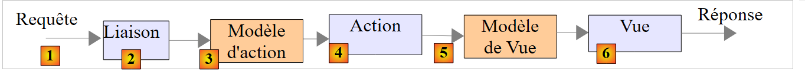 |
- la requête HTTP du client arrive en [1] ;
- en [2], les informations contenues dans la requête vont être transformées en modèle d'action [3], une classe souvent mais pas forcément, qui servira d'entrée à l'action [4] ;
- en [4], l'action, à partir de ce modèle, va générer une réponse. Celle-ci aura deux composantes : une vue V [6] et le modèle M de cette vue [5] ;
- la vue V [6] va utiliser son modèle M [5] pour générer la réponse HTTP destinée au client.
Dans le modèle MVC, l'action [4] fait partie du C (contrôleur), le modèle de la vue [5] est le M et la vue [6] est le V.
Ce chapitre étudie les mécanismes de liaison entre les informations transportées par la requête, qui sont par nature des chaînes de caractères et le modèle de l'action qui peut être une classe avec des propriétés de divers types.
Note : le terme [Modèle d'action] n'est pas un terme reconnu.
Nous créons un nouveau contrôleur pour ces nouvelles actions :
 |
Le contrôleur [ActionModelController] sera pour l'instant le suivant :
package istia.st.springmvc.controllers;
import org.springframework.web.bind.annotation.RestController;
@RestController
public class ActionModelController {
}
- ligne 5 : on rappelle que l'annotation [@RestController] fait que la réponse envoyée au client est la sérialisation en chaîne de caractères du résultat des actions du contrôleur ;
4.1. [/m01] : paramètres d'un GET
Nous ajoutons l'action [/m01] suivante :
// ----------------------- récupérer des paramètre avec GET------------------------
@RequestMapping(value = "/m01", method = RequestMethod.GET, produces = "text/plain;charset=UTF-8")
public String m01(String nom, String age) {
return String.format("Hello [%s-%s]!, Greetings from Spring Boot!", nom, age);
}
- ligne 4 : l'action admet deux paramètres nommé [nom] et [age]. Ils seront initialisés avec des paramètres portant ces mêmes noms dans la requête HTTP GET ;
Les résultats sont les suivants dans Chrome [1-3] :
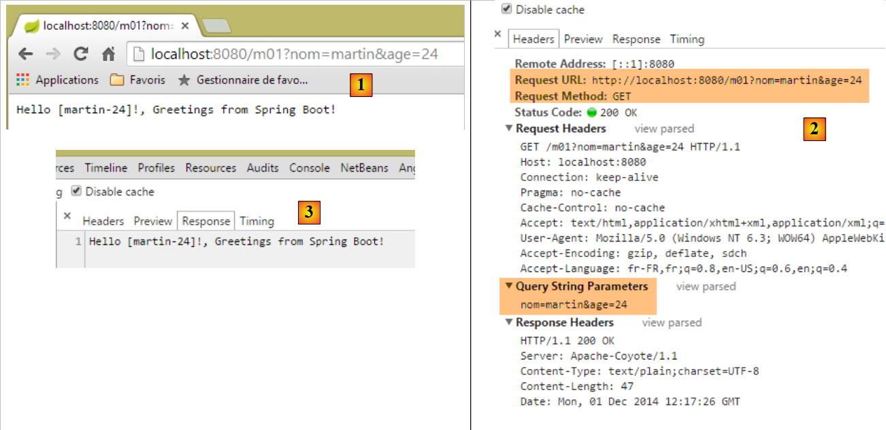 |
- en [1], la requête GET avec les paramètres [nom] et [age] ;
- en [3], on voit que l'action [/m01] a bien récupéré ces paramètres ;
4.2. [/m02] : paramètres d'un POST
Nous ajoutons l'action [/m02] suivante :
// ----------------------- récupérer des paramètre avec POST------------------------
@RequestMapping(value = "/m02", method = RequestMethod.POST, produces = "text/plain;charset=UTF-8")
public String m02(String nom, String age) {
return String.format("Hello [%s-%s]!, Greetings from Spring Boot!", nom, age);
}
- ligne 4 : l'action admet deux paramètres nommé [nom] et [age]. Ils seront initialisés avec des paramètres portant ces mêmes noms dans la requête HTTP POST ;
Les résultats avec [Advanced rest Client] sont les suivants :
 |
- en [1-3], la requête POST avec les paramètres [nom] et [age] ;
- en [4-5], on fixe l'entête HTTP [Content-Type] de la requête POST. Il doit être [Content-Type: application/x-www-form-urlencoded] ;
- en [6], [Form Data] donne la liste des paramètres d'une opération POST. Ici on voit les paramètres [nom] et [age] ;
- en [7], la réponse du serveur qui montre que l'action [/m02] a bien récupéré les paramètres [nom] et [age] ; ;
4.3. [/m03] : paramètres de mêmes noms
Nous avons vu au paragraphe 2.5.2.8, que la liste à sélection multiple pouvait envoyer au serveur des paramètres de mêmes noms. Voyons comment une action peut les récupérer. Nous ajoutons l'action [/m03] suivante :
// ----------------------- récupérer des paramètres de mêmes noms-----------------
@RequestMapping(value = "/m03", method = RequestMethod.POST, produces = "text/plain;charset=UTF-8")
public String m03(String nom[]) {
return String.format("Hello [%s]!, Greetings from Spring Boot!", String.join("-", nom));
}
- ligne 2 : l'action admet un paramètre nommé [nom[]]. Il sera initialisé ici avec tous les paramètres portant ce nom que ce soit dans un GET ou un POST, puisqu'ici le type de la requête n'a pas été précisé ;
Les résultats sont les suivants :
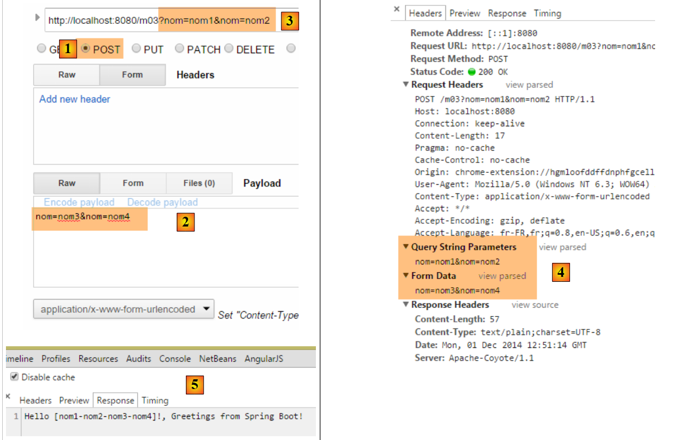 |
- par un POST [1], on envoie les paramètres [2] ;
- on met également des paramètres dans l'URL [3] ;
- en [4], les quatre paramètres portant le même nom [nom] : [Query String parameters] sont les paramètres de l'URL, [Form Data] sont les paramètres postés ;
- en [5], on voit que l'action [/m03] a récupéré les quatre paramètres nommés [nom] ;
4.4. [/m04] : mapper les paramètres de l'action dans un objet Java
Soit la nouvelle action [/m04] suivante :
// ------ mapper les paramètres dans un objet (Command Object) ---------------
@RequestMapping(value = "/m04", method = RequestMethod.POST)
public Personne m04(Personne personne) {
return person;
}
- ligne 3 : l'action a pour paramètre une personne de type suivant :
public class Personne {
// identifiant
private Integer id;
// nom
private String nom;
// âge
private int age;
....
// getters et setters
...
}
- pour créer le paramètre [Personne personne], Spring MVC fait un [new Personne()] ;
- puis s'il y a des paramètres portant le nom des champs [id, nom, age] de l'objet créé, il instancie avec les champs via leurs setters ;
- ligne 4 : l'action rend un type [Personne] qui va donc être sérialisée en chaîne de caractères avant d'être envoyé au client. On a vu que par défaut, la sérialisation effectuée était une sérialisation jSON. Le client devrait donc recevoir la chaîne jSON d'une personne ;
Voici un exemple :
 |
- en [1], les paramètres [id, nom, age] pour construire un objet [Personne] ;
- en [2], la chaîne jSON de cette personne ;
Que se passe-t-il si on n'envoie pas tous les champs d'une personne ? Essayons :
 |
- en [2], seul le paramètre [id] a été initialisé ;
4.5. [/m05] : récupérer les éléments d'une URL
Soit la nouvelle action [/m05] suivante :
// ----------------------- récupérer les éléments de l'URL ------------------------
@RequestMapping(value = "/m05/{a}/x/{b}", method = RequestMethod.GET)
public Map<String, String> m05(@PathVariable("a") String a, @PathVariable("b") String b) {
Map<String, String> map = new HashMap<String, String>();
map.put("a", a);
map.put("b", b);
return map;
}
- ligne 2 : l'URL traitée est de la forme [/m05/{a}/x/{b}] où {param} est un élément paramètre de l'URL ;
- ligne 3 : les éléments paramètres de l'URL sont récupérés avec l'annotation [@PathVariable] ;
- lignes 4-6 : les éléments [a] et [b] récupérés sont mis dans un dictionnaire ;
- ligne 7 : la réponse sera la chaîne jSON de ce dictionnaire ;
Les résultats sont les suivants :
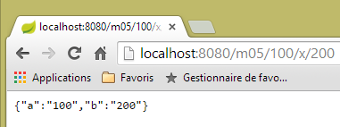 |
4.6. [/m06] : récupérer des éléments d'URL et des paramètres
Soit la nouvelle action [/m06] suivante :
// -------- récupérer des éléments de l'URL et des paramètres---------------
@RequestMapping(value = "/m06/{a}/x/{b}", method = RequestMethod.GET)
public Map<String, Object> m06(@PathVariable("a") Integer a, @PathVariable("b") Double b, Double c) {
Map<String, Object> map = new HashMap<String, Object>();
map.put("a", a);
map.put("b", b);
map.put("c", c);
return map;
}
- ligne 3 : on récupère à la fois des éléments d'URL [Integer a, Double b] et un paramètre (GET ou POST) [Double c] ;
- lignes 4-7 : ces éléments sont mis dans un dictionnaire ;
- ligne 8 : qui forme la réponse du client qui recevra donc la chaîne jSON de ce dictionnaire ;
Voici les résultats :
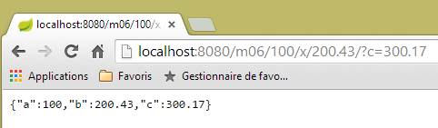 |
On notera le / à la fin du chemin [http://localhost:8080/m06/100/x/200.43/]. Sans lui, on obtient le résultat incorrect suivant :
 |
4.7. [/m07] : accéder à la totalité de la requête
Soit la nouvelle action [/m07] suivante :
// ------ accéder à la requête HttpServletRequest ------------------------
@RequestMapping(value = "/m07", method = RequestMethod.GET, produces = "text/plain;charset=UTF-8")
public String m07(HttpServletRequest request) {
// les entêtes HTTP
Enumeration<String> headerNames = request.getHeaderNames();
StringBuffer buffer = new StringBuffer();
while (headerNames.hasMoreElements()) {
String name = headerNames.nextElement();
buffer.append(String.format("%s : %s\n", name, request.getHeader(name)));
}
return buffer.toString();
}
- ligne 3 : on demande à Spring MVC d'injecter l'objet [HttpServletRequest request] qui encapsule la totalité des informations qu'on peut obtenir sur la requête ;
- lignes 5-10 : on récupère tous les entêtes HTTP de la requête pour les assembler dans une chaîne de caractères qu'on envoie au client (ligne 11) ;
Les résultats sont les suivants :
 |
- en [1], les entêtes HTTP de la requête ;
 |
- en [2], la réponse. On y retrouve bien tous les entêtes HTTP de la requête.
4.8. [/m08] : accès à l'objet [Writer]
Considérons l'action suivante :
// ----------------------- injection de writer ------------------------
@RequestMapping(value = "/m08", method = RequestMethod.GET)
public void m08(Writer writer) throws IOException {
writer.write("Bonjour le monde !");
}
- ligne 3 : Spring MVC injecte l'objet [Writer writer] qui permet d'écrire dans le flux de la réponse au client ;
- ligne 3 : l'action rend un type [void] ce qui indique qu'il doit construire lui-même la réponse au client ;
- ligne 4 : ajout d'un texte dans le flux de la réponse au client ;
Les résultats sont les suivants :
 |
- en [2], on voit que l'entête HTTP [Content-Type] n'a pas été envoyé ;
- en [3], la réponse ;
4.9. [/m09] : accéder à un entête HTTP
Considérons l'action suivante :
// ----------------------- injection de RequestHeader ------------------------
@RequestMapping(value = "/m09", method = RequestMethod.GET)
public String m09(@RequestHeader("User-Agent") String userAgent) {
return userAgent;
}
- ligne 3 : l'annotation [@RequestHeader("User-Agent")] permet de récupérer l'entête HTTP [User-Agent] ;
- ligne 4 : on rend le texte de cet entête ;
Les résultats sont les suivants :
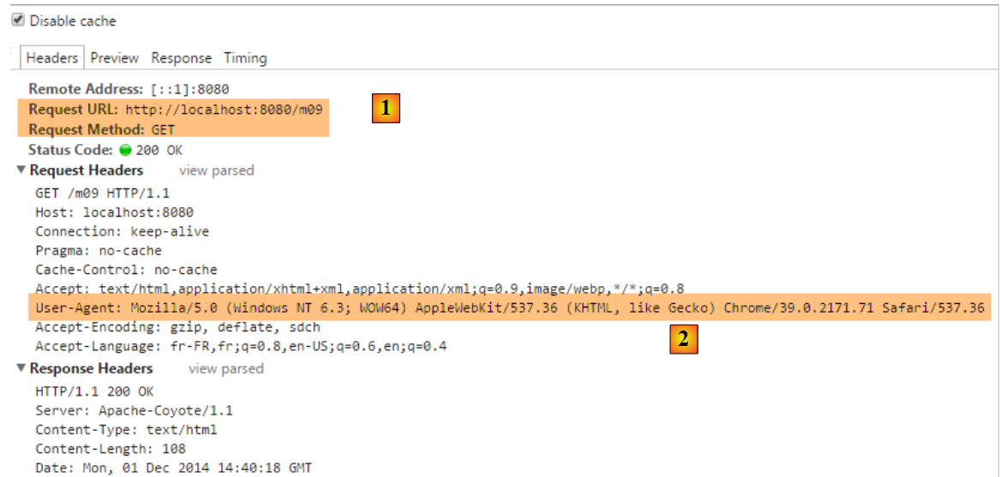 |
- en [2], l'entête HTTP [User-Agent] ;
 |
- en [3], l'action [/m08] a correctement récupéré cet entête ;
4.10. [/m10, /m11] : accéder à un cookie
Un cookie est en général un entête HTTP que le :
- serveur envoie une première fois au client ;
- client renvoie ensuite systématiquement au serveur ;
Créons d'abord une action qui crée le cookie :
// ----------------------- création de Cookie ------------------------
@RequestMapping(value = "/m10", method = RequestMethod.GET)
public void m10(HttpServletResponse response) {
response.addCookie(new Cookie("cookie1", "remember me"));
}
- ligne 3 : on injecte l'objet [HttpServletResponse response] afin d'avoir le contrôle total sur la réponse ;
- ligne 4 : on crée un cookie avec une clé [cookie1] et une valeur [remember me] (Note : les caractères accentués dans la valeur d'un cookie provoquent des erreurs) ;
- ligne 3 : l'action ne rend rien. Par ailleurs, elle n'écrit rien dans le corps de la réponse. C'est donc un document vide que va recevoir le client. La réponse n'est utilisée que pour y ajouter l'entête HTTP d'un cookie ;
Voyons les résultats :
 |
- en [1] : la requête ;
- en [2] : la réponse est vide ;
- en [3] : le cookie créé par l'action ;
Maintenant créons une action pour récupérer ce cookie que le navigateur va désormais envoyer à chaque requête :
// ----------------------- injection de Cookie ------------------------
@RequestMapping(value = "/m11", method = RequestMethod.GET)
public String m10(@CookieValue("cookie1") String cookie1) {
return cookie1;
}
- ligne 3 : l'annotation [@CookieValue("cookie1")] permet de récupérer le cookie de clé [cookie1] ;
- ligne 4 : cette valeur sera la réponse faite au client ;
Voyons les résultats :
 |
- en [2], on voit que le navigateur renvoie le cookie ;
- en [3], l'action l'a bien récupéré ;
4.11. [/m12] : accéder au corps d'un POST
Les paramètres postés sont habituellement accompagnés de l'entête HTTP [Content-Type: application/x-www-form-urlencoded]. On peut accéder à la totalité de la chaîne postée. Nous créons l'action suivante :
// ----------- récupérer le corps d'un POST de type String------------------------
@RequestMapping(value = "/m12", method = RequestMethod.POST)
public String m12(@RequestBody String requestBody) {
return requestBody;
}
- ligne 3 : l'annotation [@RequestBody] permet de récupérer le corps du POST. Ici, on suppose que celui-ci est de type [String] ;
- ligne 4 : on renvoie ce corps au client ;
Voici un premier exemple :
 |
- en [2], les valeurs postées ;
- en [3], l'entête HTTP [Content-Type] de la requête ;
- en [4], la réponse du serveur ;
Les paramètres postés n'ont pas toujours la forme simple [p1=v1&p2=v2] qu'on a souvent utilisée jusqu'ici. Prenons un cas plus complexe :
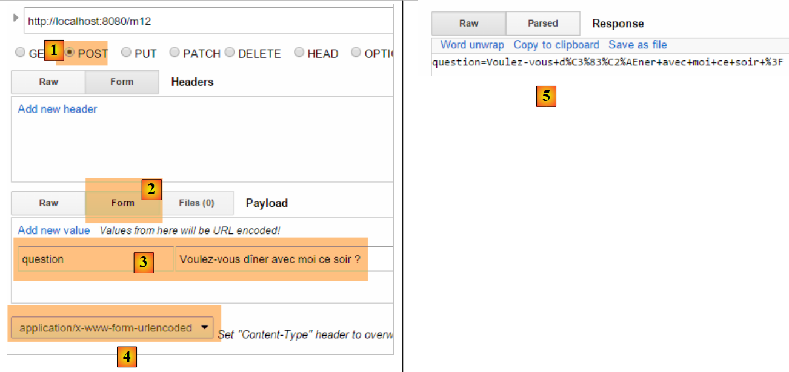 |
- en [2-3] : on rentre les valeurs postées sous la forme [clé:value] ;
- en [5], la chaîne qui a été postée ;
Avec le type [Content-Type: application/x-www-form-urlencoded], la chaîne postée doit avoir la forme [p1=v1&p2=v2]. Si on veut poster n'importe quoi, on prendra le type [Content-Type: text/plain]. Voici un exemple :
 |
- en [2-3], on crée l'entête HTTP [Content-Type]. Par défaut [5], c'est lui qui sera utilisé au lieu de celui défini en [6]. L'attribut [charset=utf-8] est important. Sans lui, on perd les caractères accentués de la chaîne postée ;
- en [4], la chaîne postée qu'on récupère correctement en [7] ;
4.12. [/m13, /m14] : récupérer des valeurs postées en jSON
Il est possible de poster des paramètres avec l'entête HTTP [Content-Type: application/json]. Nous créons l'action suivante :
// ----------------------- récupérer le corps jSON d'un POST
@RequestMapping(value = "/m13", method = RequestMethod.POST, consumes = "application/json")
public String m13(@RequestBody Personne personne) {
return personne.toString();
}
- ligne 2 : [consumes = "application/json"] précise que l'action attend un corps jSON ;
- ligne 3 : [@RequestBody] représente ce corps. Cette annotation a été associée à un objet de type [Personne]. Le corps jSON sera automatiquement désérialisé dans cet objet ;
- ligne 4 : on utilise la méthode [Personne].toString() pour retourner quelque chose qui ne soit pas la chaîne jSON envoyée ;
Voici un exemple :
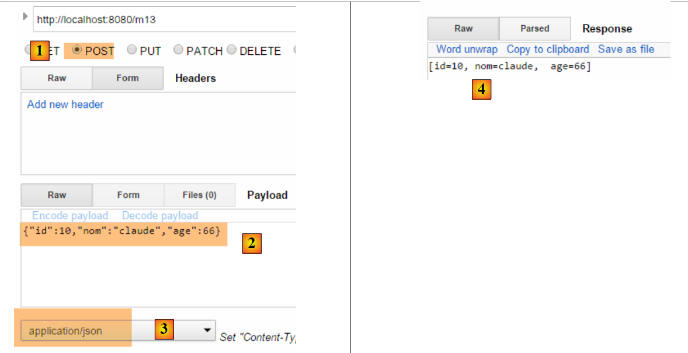 |
- en [2], la chaîne jSON postée ;
- en [3], le [Content-Type] de la requête ;
- en [4], la réponse du serveur ;
On peut faire la même chose différemment :
// ----------------------- récupérer le corps jSON d'un POST 2 -------------------
@RequestMapping(value = "/m14", method = RequestMethod.POST, consumes = "text/plain")
public String m14(@RequestBody String requestBody) throws JsonParseException, JsonMappingException, IOException {
Personne personne = new ObjectMapper().readValue(requestBody, Personne.class);
return personne.toString();
}
- ligne 2 : on a indiqué que la méthode attendait un flux de type [text/plain]. Spring MVC traitera alors le corps de la requête comme un type [String] (ligne 3) ;
- ligne 4 : on désérialise la chaîne jSON en un objet [Personne] (cf paragraphe 9.7, page 542) ;
Les résultats sont les suivants :
 |
- en [3], bien mettre [text/plain] ;
4.13. [/m15] : récupérer la session
Revenons sur l'architecture d'exécution d'une action :
 |
La classe du contrôleur est instanciée au début de la requête du client et détruite à la la fin de celle-ci. Aussi ne peut-elle servir à mémoriser des données entre deux requêtes même si elle est appelée de façon répétée. On peut vouloir mémoriser deux types de données :
- des données partagées par tous les utilisateurs de l'application web. Ce sont en général des données en lecture seule ;
- des données partagées par les requêtes d'un même client. Ces données sont mémorisées dans un objet appelé Session. On parle alors de session client pour désigner la mémoire du client. Toutes les requêtes d'un client ont accès à cette session. Elles peuvent y stocker et y lire des informations.
 |
Ci-dessus, nous montrons les types de mémoire auxquels a accès une action :
- la mémoire de l'application qui contient la plupart du temps des données en lecture seule et qui est accessible à tous les utilisateurs ;
- la mémoire d'un utilisateur particulier, ou session, qui contient des données en lecture / écriture et qui est accessible aux requêtes successives d'un même utilisateur ;
- non représentée ci-dessus, il existe une mémoire de requête, ou contexte de requête. La requête d'un utilisateur peut être traitée par plusieurs actions successives. Le contexte de la requête permet à une action 1 de transmettre de l'information à une action 2.
Regardons un premier exemple mettant en lumière ces différentes mémoires :
// ----------------------- récupérer la session ------------------------
@RequestMapping(value = "/m15", method = RequestMethod.GET, produces = "text/plain;charset=UTF-8")
public String m15(HttpSession session) {
// on récupère l'objet de clé [compteur] dans la session
Object objCompteur = session.getAttribute("compteur");
// on le convertit en entier pour l'incrémenter
int iCompteur = objCompteur == null ? 0 : (Integer) objCompteur;
iCompteur++;
// on le remet dans la session
session.setAttribute("compteur", iCompteur);
// on le rend comme résultat de l'action
return String.valueOf(iCompteur);
}
Spring MVC maintient la session de l'utilisateur dans un objet de type [HttpSession].
- ligne 3 : on demande à Spring MVC d'injecter l'objet [HttpSession] dans les paramètres de l'action ;
- ligne 5 : on récupère dans celle-ci un attribut nommé [compteur]. Une session se comporte comme un dictionnaire, un ensemble de couples [clé, valeur]. Si la clé [compteur] n'existe pas dans la session, on récupère un pointeur null ;
- ligne 7 : la valeur associée à la clé [compteur] sera un type [Integer] ;
- ligne 8 : incrémentation du compteur ;
- ligne 10 : mise à jour du compteur dans la session ;
- ligne 12 : la valeur du compteur est envoyée au client ;
Lorsque [/m15] sera exécutée la :
- première fois, ligne 12 le compteur aura la valeur 1 ;
- seconde fois, ligne 5 on récupèrera cette valeur 1 pour la passer à 2 ;
- ...
Voici un exemple d'exécution :
 |
- en [1], on obtient bien la 1ère valeur du compteur ;
- en [2], le serveur a envoyé un cookie de session. Il a la clé [JSESSIONID] et pour valeur une chaîne de caractères unique pour chaque utilisateur. On se rappelle que le navigateur renvoie systématiquement les cookies qu'il reçoit. Ainsi lorsqu'on va demander l'action [/m15] une seconde fois, le client va renvoyer ce cookie, ce qui va permettre au serveur de le reconnaître et de le rattacher à sa session. C'est de cette façon que la mémoire de l'utilisateur est maintenue ;
Voyons la seconde demande :
 |
- en [3], on voit que le client renvoie le cookie de session. On peut remarquer que dans la réponse du serveur, il n'y a plus ce cookie de session. C'est désormais le client qui l'envoie pour se faire reconnaître ;
- en [4], la seconde valeur du compteur. Il a bien été incrémenté ;
4.14. [/m16] : récupérer un objet de portée [session]
On peut vouloir mettre toutes les données de la session d'un utilisateur dans un unique objet et mettre uniquement celui-ci dans la session. Nous suivons cette voie. Nous mettons le compteur dans l'objet [SessionModel] suivant :
 |
package istia.st.sprinmvc.models;
import org.springframework.context.annotation.Scope;
import org.springframework.context.annotation.ScopedProxyMode;
import org.springframework.stereotype.Component;
@Component
@Scope(value = "session", proxyMode = ScopedProxyMode.TARGET_CLASS)
public class SessionModel {
private int compteur;
public int getCompteur() {
return compteur;
}
public void setCompteur(int compteur) {
this.compteur = compteur;
}
}
- ligne 7 : l'annotation [@Component] est une annotation Spring (ligne 5) qui fait de la classe [SessionModel] un composant dont le cycle de vie est géré par Spring ;
- ligne 8 : l'annotation [@Scope(value = "session", proxyMode = ScopedProxyMode.TARGET_CLASS)] est également une annotation Spring (lignes 3-4). Lorsque Spring MVC la rencontre, la classe correspondante est créée et mise dans la session de l'utilisateur. L'attribut [proxyMode = ScopedProxyMode.TARGET_CLASS] est important. C'est grâce à lui que Spring MVC crée une instance par utilisateur et non une unique instance pour tous les utilisateurs (singleton) ;
- ligne 11 : le compteur ;
Pour que ce nouveau composant Spring soit reconnu, il faut vérifier la configuration de l'application dans la classe [Application] :
package istia.st.springmvc.main;
import org.springframework.boot.SpringApplication;
import org.springframework.boot.autoconfigure.EnableAutoConfiguration;
import org.springframework.context.annotation.ComponentScan;
import org.springframework.context.annotation.Configuration;
@Configuration
@ComponentScan({"istia.st.springmvc.controllers"})
@EnableAutoConfiguration
public class Application {
public static void main(String[] args) {
SpringApplication.run(Application.class, args);
}
}
- ligne 9 : les composants Spring sont cherchés dans le package [istia.st.springmvc.controllers]. Ce n'est plus suffisant. Nous faisons évoluer cette ligne de la façon suivante :
@ComponentScan({ "istia.st.springmvc.controllers", "istia.st.springmvc.models" })
Nous avons rajouté le package où se trouve la classe [SessionModel].
Maintenant, nous ajoutons l'action suivante :
@Autowired
private SessionModel session;
// ------ gérer un objet de portée (scope) session [Autowired] -----------
@RequestMapping(value = "/m16", method = RequestMethod.GET, produces = "text/plain;charset=UTF-8")
public String m16() {
session.setCompteur(session.getCompteur() + 1);
return String.valueOf(session.getCompteur());
}
- lignes 1-2 : le composant Spring [SessionModel] est injecté [@Autowired] dans le contrôleur. On rappelle ici qu'un contrôleur Spring est un singleton. Il est alors paradoxal d'y injecter un composant de portée moindre, ici de portée [Session]. C'est là qu'intervient l'annotation [@Scope(value = "session", proxyMode = ScopedProxyMode.TARGET_CLASS)] du composant [SessionModel]. A chaque fois que le code du contrôleur accède au champ [session] de la ligne 2, une méthode proxy est exécutée pour rendre la session de la requête actuellement traitée par le contrôleur ;
- ligne 6 : on n'a plus besoin de l'objet [HttpSession] dans les paramètres de l'action ;
- ligne 7 : on récupère / incrémente le compteur ;
- ligne 8 : on rend sa valeur ;
Voici un exemple d'exécution :
La 1ère fois
 |
La seconde fois
 |
Maintenant, prenons un autre navigateur qui va symboliser un deuxième utilisateur. Nous prenons ici un navigateur Opera :
 |
Ci-dessus en [1], ce deuxième utilisateur récupère une valeur de compteur à 1. Ce qui montre, que sa session et celle du premier utilisateur sont différentes. Si on regarde les échanges client / serveur (Ctrl-Maj-I pour Opera également), on voit en [2] que ce second utilisateur a un cookie de session différente de celui du 1er utilisateur. C'est ce qui assure l'indépendance des sessions.
4.15. [/m17] : récupérer un objet de portée [application]
Revenons sur l'architecture d'exécution d'une action :
 |
Nous savons comment construire la session de l'utilisateur. Nous allons maintenant construire un objet de portée [application] dont le contenu sera en lecture seule et accessible à tous les utilisateurs. Nous introduisons la classe [ApplicationModel] qui sera l'objet de portée [application] :
 |
package istia.st.springmvc.models;
import java.util.concurrent.atomic.AtomicLong;
import org.springframework.stereotype.Component;
@Component
public class ApplicationModel {
// compteur
private AtomicLong compteur = new AtomicLong(0);
// getters et setters
public AtomicLong getCompteur() {
return compteur;
}
public void setCompteur(AtomicLong compteur) {
this.compteur = compteur;
}
}
- ligne 5 : l'annotation [@Component] fait que la classe [ApplicationModel] sera un composant géré par Spring. La nature par défaut des composants Spring est le type [singleton] : le composant est créé en un unique exemplaire lorsque le conteneur Spring est instancié ç-à-d en général au démarrage de l'application. Nous pouvons utiliser ce cycle de vie pour stocker dans le singleton des informations de configuration qui seront accessibles à tous les utilisateurs ;
- ligne 11 : un compteur de type [AtomicLong]. Ce type a une méthode [incrementAndGet] dite atomique. Cela signifie qu'un thread qui exécute cette méthode est assuré qu'un autre thread ne lira pas la valeur du compteur (Get) entre sa lecture (Get) et son incrément (increment) par le 1er thread, ce qui provoquerait des erreurs puisque deux threads liraient la même valeur du compteur, et celui-ci au lieu d'être incrémenté de deux le serait de un ;
Nous créons la nouvelle action [/m17] suivante :
@Autowired
private ApplicationModel application;
// ----- gérer un objet de portée application [Autowired] ------------------------
@RequestMapping(value = "/m17", method = RequestMethod.GET, produces = "text/plain;charset=UTF-8")
public String m17() {
return String.valueOf(application.getCompteur().incrementAndGet());
}
- lignes 1-2 : on injecte le composant [ApplicationModel] dans le contrôleur. C'est un singleton. Donc chaque utilisateur aura une référence sur le même objet ;
- ligne 7 : on rend le compteur de portée [application] après l'avoir incrémenté ;
Voici deux exemples, l'un avec Chrome, l'autre avec Opera :
 |  |
Ci-dessus, on voit que les deux navigateurs ont travaillé avec le même compteur, ce qui n'était pas le cas avec la session. Ces deux navigateurs symbolisent deux utilisateurs différents qui ont accès tous les deux aux données de portée [application]. De façon générale, on évitera de mettre dans les objets de portée [application] des informations en lecture / écriture comme il a été fait ci-dessus avec le compteur. En effet, les threads d'exécution des différents utilisateurs accèdent en même temps aux données de portée [application]. S'il y a des informations en écriture, il faut synchroniser les accès en écriture comme il a été fait ci-dessus avec le type [AtomicLong]. Les accès concurrents sont sources d'erreurs de programmation. Aussi préfèrera-t-on ne mettre que des informations en lecture seule dans les objets de portée [application].
4.16. [/m18] : récupérer un objet de portée [session] avec [@SessionAttributes]
Il existe une autre façon de récupérer des informations de portée [session]. Nous allons mettre en session l'objet suivant :
package istia.st.springmvc.models;
public class Container {
// le compteur
public int compteur=10;
// les getters et setters
public int getCompteur() {
return compteur;
}
public void setCompteur(int compteur) {
this.compteur = compteur;
}
}
Nous allons utiliser cet objet avec les deux actions suivantes :
// utilisation de [@SessionAttribute] ----------------------
@RequestMapping(value = "/m18", method = RequestMethod.GET)
public void m18(HttpSession session) {
// ici on met la clé [container] dans la session
session.setAttribute("container", new Container());
}
// utilisation de [@ModelAttribute] ----------------------
// la clé [container] de la session sera ici injectée
@RequestMapping(value = "/m19", method = RequestMethod.GET)
public String m19(@ModelAttribute("container") Container container) {
container.setCompteur(1 + container.getCompteur());
return String.valueOf(container.getCompteur());
}
- lignes 3-6 : l'action [/m18] ne rend aucun résultat. Elle ne sert qu'à créer un objet dans la session avec la clé [container] ;
- ligne 11 : dans l'action [/m19], on utilise l'annotation [@ModelAttribute]. Le comportement de cette annotation est assez complexe. Le paramètre [container] de cette annotation peut désigner diverses choses et en particulier un objet de la session. Il faut pour cela que celui-ci ait été déclaré avec une annotation [@SessionAttributes] sur la classe elle-même :
@RestController
@SessionAttributes({"container"})
public class ActionModelController {
- la ligne 2 ci-dessus, désigne la clé [container] comme faisant partie des attributs de la session ;
Résumons :
- en [/m18], la clé [container] est mise en session ;
- l'annotation [@SessionAttributes({"container"})] fait que cette clé peut être injectée dans un paramètre annoté avec [@ModelAttribute("container")] ;
- pas visible dans l'exemple d'exécution qui va suivre, mais une information annotée avec [@ModelAttribute] fait automatiquement partie du modèle M transmis à la vue V ;
Voici un exemple d'exécution. Tout d'abord, on met la clé [container] dans la session avec l'action [/m18] [1]. Ensuite, on appelle deux fois l'action [/m19] pour voir le compteur s'incrémenter.
 |
4.17. [/m20-/m23] : injection d'informations avec [@ModelAttribute]
Considérons la nouvelle action suivante :
// l'attribut p fera partie de tous les modèles [Model] de vue ----------------
@ModelAttribute("p")
public Personne getPersonne() {
return new Personne(7,"abcd", 14);
}
// ---------------instanciation de @ModelAttribute --------------------------
// sera injecté s'il est dans la session
// sera injecté si le contrôleur a défini une méthode pour cet attribut
// peut provenir des champs de l'URL s'il existe un convertisseur String --> type de l'attribut
// sinon est construit avec le constructeur par défaut
// ensuite les attributs du modèle sont initialisés avec les paramètres du GET ou du POST
// le résultat final fera partie du modèle produit par l'action
// l'attribut p est injecté dans les arguments------------------------
@RequestMapping(value = "/m20", method = RequestMethod.GET)
public Personne m20(@ModelAttribute("p") Personne personne) {
return personne;
}
- ligne 2-5 : définissent un attribut de modèle nommé [p]. Il s'agit du modèle M d'une vue V, modèle représenté par un type [Model] dans Spring MVC. Un modèle se comporte comme un dictionnaire de couples [clé, valeur]. Ici, la clé [p] est associée à l'objet [Personne] construit par la méthode [getPersonne]. Le nom de la méthode peut être quelconque ;
- ligne 17 : l'attribut de modèle de clé [p] est injecté dans les paramètres de l'action. Cette injection se fait selon les règles des lignes 8-12. Ici, on sera dans le cas défini ligne 9. Donc ligne 17 le paramètre [Personne personne] sera l'objet [Personne(7,'abcd',14)] ;
- ligne 18 : on rend l'objet [personne] pour vérification. Celui-ci sera sérialisé en jSON avant d'être envoyé au client.
Voici un exemple :
 |
Maintenant, examinons l'action suivante :
// --------- l'attribut p fait automatiquement partie du modèle M de la vue V
@RequestMapping(value = "/m21", method = RequestMethod.GET)
public String m21(Model model) {
return model.toString();
}
Une action qui veut faire afficher une vue V doit construire le modèle M de celle-ci. Spring MVC gère celui-ci avec un type [Model] qui peut être injecté dans les paramètres de l'action. Au départ ce modèle est vide ou contient les informations taguées avec l'annotation [@ModelAttribute]. L'action enrichit ou non ce modèle avant de le transmettre à une vue.
- ligne 3 : injection du modèle M ;
- ligne 4 : on veut voir ce qu'il y a dedans. On le sérialise en chaîne de caractères pour l'envoyer au client. Ici, la méthode [Personne.toString] va être utilisée. Il faut donc qu'elle existe ;
Voici une exécution :
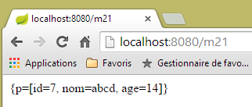 |
Ci-dessus, on voit que les instructions :
@ModelAttribute("p")
public Personne getPersonne() {
return new Personne(7,"abcd", 14);
}
ont créé une entrée [p, Personne(7,'abcd',14)] dans le modèle. C'est toujours ainsi.
On considère maintenant le cas suivant :
// sinon est construit avec le constructeur par défaut
// ensuite les attributs du modèle sont initialisés avec les paramètres du GET ou du POST
avec l'action suivante :
// --------- l'attribut de modèle [param1] fait partie du modèle mais est non initialisé
@RequestMapping(value = "/m22", method = RequestMethod.GET)
public String m22(@ModelAttribute("param1") String p1, Model model) {
return model.toString();
}
- ligne 3 : l'attribut de modèle de clé [param1] n'existe pas. Dans ce cas, le type associé doit avoir un constructeur par défaut. C'est le cas ici du type [String] mais on ne peut écrire [@ModelAttribute("param1") Integer p1] car la classe [Integer] n'a pas de constructeur par défaut ;
- ligne 4 : on retourne le modèle pour voir si l'attribut de modèle de clé [param1] en fait partie ;
Voici un exemple d'exécution :
 |
L'attribut de modèle [param1] est bien présent dans le modèle mais la méthode [toString] de la valeur associée ne donne pas d'indication sur cette valeur.
Considérons maintenant l'action suivante, où nous mettons explicitement une information dans le modèle :
// --------- l'attribut de modèle [param2] est mis explicitement dans le modèle
@RequestMapping(value = "/m23", method = RequestMethod.GET)
public String m23(String p2, Model model) {
model.addAttribute("param2",p2);
return model.toString();
}
- ligne 4 : la valeur [p2] récupérée ligne 3 est mise dans le modèle associée à la clé [param2] :
Voici un exemple d'exécution :
 |
Les règles changent si le paramètre de l'action est un objet. Voici un premier exemple :
// ------ l'attribut de modèle [unePersonne] est automatiquement mis dans le modèle
@RequestMapping(value = "/m23b", method = RequestMethod.GET)
public String m23b(@ModelAttribute("unePersonne") Personne p1, Model model) {
return model.toString();
}
L'action ne modifie pas le modèle qu'on lui a donné. Le résultat est le suivant :
 |
On constate que l'annotation [@ModelAttribute("unePersonne") Personne p1] a mis la personne [p1] dans le modèle, associée à la clé [unePersonne].
Considérons maintenant l'action suivante :
// --------- la personne p1 est automatiquement mise dans le modèle
// -------- avec pour clé le nom de sa classe avec le 1er caractère en minuscule
@RequestMapping(value = "/m23c", method = RequestMethod.GET)
public String m23c(Personne p1, Model model) {
return model.toString();
}
- ligne 4 : on n'a pas mis l'annotation [@ModelAttribute] ;
Le résultat est le suivant :
 |
On constate que la présence du paramètre [Personne p1] a mis la personne [p1] dans le modèle, associée à la clé [personne] qui est le nom de la classe [Personne] avec le 1er caractère en minuscule.
4.18. [/m24] : validation du modèle de l'action
Considérons le modèle d'action [ActionModel01] suivant :
 |
package istia.st.springmvc.models;
import javax.validation.constraints.NotNull;
public class ActionModel01 {
// data
@NotNull
private Integer a;
@NotNull
private Double b;
// getters et setters
...
}
- lignes 8 et 9 : l'annotation [@NotNull] est une contrainte de validation qui indique que la donnée annotée ne peut avoir la valeur null ;
Examinons maintenant l'action suivante :
// ----------------------- validation d'un modèle ------------------------
@RequestMapping(value = "/m24", method = RequestMethod.GET)
public Map<String, Object> m24(@Valid ActionModel01 data, BindingResult result) {
Map<String, Object> map = new HashMap<String, Object>();
// des erreurs ?
if (result.hasErrors()) {
StringBuffer buffer = new StringBuffer();
// parcours de la liste des erreurs
for (FieldError error : result.getFieldErrors()) {
buffer.append(String.format("[%s:%s:%s:%s:%s]", error.getField(), error.getRejectedValue(),
String.join(" - ", error.getCodes()), error.getCode(),error.getDefaultMessage()));
}
map.put("errors", buffer.toString());
} else {
// pas d'erreurs
Map<String, Object> mapData = new HashMap<String, Object>();
mapData.put("a", data.getA());
mapData.put("b", data.getB());
map.put("data", mapData);
}
return map;
}
- ligne 3 : un objet [ActionModel01] va être instancié et ses champs [a, b] initialisés avec des paramètres de mêmes noms. L'annotation [@Valid] indique que les contraintes de validité doivent être vérifiées. Les résultats de cette vérification seront placés dans le paramètre de type [BindingResult] (second paramètre). Les vérifications suivantes auront lieu :
- à cause des annotations [@NotNull], les paramètres [a] et [b] doivent être présents ;
- à cause du type [Integer a], le paramètre [a] qui par nature est de type [String] doit être convertible en un type [Integer] ;
- à cause du type [Double b], le paramètre [b] qui par nature est de type [String] doit être convertible en un type [Double] ;
Avec l'annotation [@Valid], les erreurs de validation vont être reportées dans le paramètre [BindingResult result]. Sans l'annotation [@Valid], les erreurs de validation provoquent un plantage de l'action et le serveur envoie au client une réponse HTTP avec un statut 500 (Internal server error).
- ligne 3 : le résultat de l'action est de type [Map]. Ce sera la chaîne jSON de ce résultat qui sera envoyée au client. On construit deux sortes de dictionnaire :
- en cas d'échec, un dictionnaire avec une entrée ['errors', value] où [value] est une chaîne de caractères décrivant toutes les erreurs (ligne 13) ;
- en cas de réussite, un dictionnaire à une entrée ['data',value] où [value] est lui-même un dictionnaire à deux entrées : ['a', value], ['b', value] (ligne 19) ;
- lignes 9-12 : pour chaque erreur [error] détectée, on construit la chaîne [error.getField(), error.getRejectedValue(), error.Codes, error.getDefaultMessage()] :
- le 1er élément est le champ erroné, [a] ou [b],
- le second élément est la valeur refusée, [x] par exemple,
- le troisième élément est une liste de codes d'erreur. Nous allons voir leurs rôles prochainement ;
- le quatrième élément est le code de l'erreur. il fait partie de la liste précédente ;
- le dernier élément est le message d'erreur par défaut. On peut en effet avoir plusieurs messages d'erreur ;
Voici quelques exemples d'exécution :
 |
Ci-dessus, on voit que :
- l'affectation de 'x' au champ [ActionModel01.a] a échoué et le message d'erreur dit pourquoi ;
- l'affectation de 'y' au champ [ActionModel01.b] a échoué et le message d'erreur dit pourquoi ;
On notera les codes de l'erreur sur le champ [a] : [typeMismatch.actionModel01.a - typeMismatch.a - typeMismatch.java.lang.Integer - typeMismatch]. Nous reviendrons sur ces codes d'erreur lorsqu'il faudra personnaliser le message de l'erreur. On notera que le code de l'erreur est [typeMismatch].
Un autre exemple :
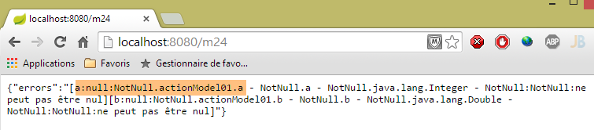 |
Ici, on n'a pas passé les paramètres [a] et [b]. Les validateurs [@NotNull] du modèle d'action [ActionModel01] ont alors joué leur rôle ;
Enfin, des valeurs correctes :
 |
4.19. [m/24] : personnalisation des messages d'erreur
Revenons à une copie d'écran de l'exemple précédent :
|
Nous voyons ci-dessus les messages d'erreur par défaut. Il est clair que nous ne pouvons les garder dans une application réelle. Il est possible de définir ces messages d'erreur. Pour cela, nous allons nous aider des codes de l'erreur. Ci-dessus, nous voyons que l'erreur pour le champ [a] a les codes suivants : [typeMismatch.actionModel01.a - typeMismatch.a - typeMismatch.java.lang.Integer - typeMismatch]. Ces codes d'erreur vont du plus précis au moins précis :
- [typeMismatch.actionModel01.a] : erreur de type sur le champ [a] du type [ActionModel01] ;
- [typeMismatch.a] : erreur de type sur un champ nommé [a] ;
- [typeMismatch.java.lang.Integer] : erreur de type sur un type Integer ;
- [typeMismatch] : erreur de type ;
On remarque également que le code d'erreur sur le champ [a] obtenu par [error.getCode()] est [typeMismatch] (cf copie d'écran ci-dessus).
Nous allons placer les messages d'erreur dans un fichier de propriétés :
 |
Le fichier [messages.properties] ci-dessus sera le suivant :
NotNull=Le champ ne peut être vide
typeMismatch=Format invalide
typeMismatch.model01.a=Le paramètre [a] doit être entier
Chaque ligne a la forme suivante :
Ici, la clé sera un code d'erreur et le message, le message d'erreur associé à ce code.
Rappelons les codes d'erreur pour les deux champs :
- [typeMismatch.actionModel01.a - typeMismatch.a - typeMismatch.java.lang.Integer - typeMismatch], lorsque le paramètre [a] est invalide ;
- [typeMismatch.actionModel01.b - typeMismatch.b - typeMismatch.java.lang.Double - typeMismatch:typeMismatch ] lorsque le paramètre [b] est invalide ;
- [NotNull.actionModel01.a - NotNull.a - NotNull.java.lang.Integer - NotNull] lorsque le paramètre [a] est absent ;
- [NotNull.actionModel01.b - NotNull.b - NotNull.java.lang.Double - NotNull] lorsque le paramètre [b] est absent ;
Le fichier [messages.properties] doit comporter un message d'erreur pour tous les cas d'erreur possibles. Pour le cas :
- des paramètres [a] et [b] absents, c'est le code [NotNull] qui sera utilisé ;
- du paramètre [a] incorrect, nous avons mis des messages pour deux codes [typeMismatch.actionModel01.a, typeMismatch]. Nous verrons lequel est utilisé ;
- du paramètre [b] incorrect, c'est le code [typeMismatch] qui sera utilisé ;
Pour que le fichier [messages.properties] soit utilisé, il faut configurer Spring :
 |
Nous enlevons les annotations de configuration de la classe [Application] :
package istia.st.springmvc.main;
import org.springframework.boot.SpringApplication;
public class Application {
public static void main(String[] args) {
SpringApplication.run(Config.class, args);
}
}
- ligne 8 : l'application Spring Boot est lancée. Le premier paramètre de la méthode statique [SpringApplication.run] est la classe qui configure désormais l'application ;
La classe [Config] est la suivante :
package istia.st.springmvc.main;
import org.springframework.boot.autoconfigure.EnableAutoConfiguration;
import org.springframework.context.MessageSource;
import org.springframework.context.annotation.Bean;
import org.springframework.context.annotation.ComponentScan;
import org.springframework.context.annotation.Configuration;
import org.springframework.context.support.ResourceBundleMessageSource;
import org.springframework.web.servlet.config.annotation.WebMvcConfigurerAdapter;
@Configuration
@ComponentScan({ "istia.st.springmvc.controllers", "istia.st.springmvc.models" })
@EnableAutoConfiguration
public class Config extends WebMvcConfigurerAdapter {
@Bean
public MessageSource messageSource() {
ResourceBundleMessageSource messageSource = new ResourceBundleMessageSource();
messageSource.setBasename("i18n/messages");
return messageSource;
}
}
- lignes 11-13 : on retrouve les annotations de configuration qui étaient auparavant dans la classe [Application] ;
- ligne 14 : pour configurer une application Spring MVC, il faut étendre la classe [WebMvcConfigurerAdapter] ;
- ligne 15 : l'annotation [@Bean] introduit un composant Spring, un singleton ;
- ligne 16 : on définit un bean nommé [messageSource] (le nom de la méthode). Ce bean sert à definir les fichiers de messages de l'application et il doit avoir obligatoirement ce nom ;
- lignes 17-19 : indique à Spring que le fichier des messages :
- est dans le dossier [i18n] dans le Classpath du projet (ligne 18),
- s'appelle [messages.properties] (ligne 18). En fait le terme [messages] est la racine des noms des fichiers de messages plutôt que le nom lui-même. Nous allons voir que dans le cadre de l'internationalisation, on peut trouver plusieurs fichiers de messages, un par culture gérée. Ainsi peut-on avoir [messages_fr.properties] pour la langue française et [messages_en.properties] pour la langue anglaise. Les suffixes ajoutés à la racine [messages] sont normalisés. On ne peut pas mettre n'importe quoi ;
Dans le projet STS, il faut mettre le dossier [i18n] dans le dossier des ressources car celui-ci est mis dans le Classpath du projet :
 |
Pour exploiter ce fichier, nous créons la nouvelle action suivante :
// validation d'un modèle, gestion des messages d'erreur ------------------------
@RequestMapping(value = "/m25", method = RequestMethod.GET)
public Map<String, Object> m25(@Valid ActionModel01 data, BindingResult result, HttpServletRequest request)
throws Exception {
// le dictionnaire des résultats
Map<String, Object> map = new HashMap<String, Object>();
// le contexte de l'application Spring
WebApplicationContext ctx = WebApplicationContextUtils.getWebApplicationContext(request.getServletContext());
// locale
Locale locale = RequestContextUtils.getLocale(request);
// des erreurs ?
if (result.hasErrors()) {
StringBuffer buffer = new StringBuffer();
for (FieldError error : result.getFieldErrors()) {
// recherche du msg d'erreur à parir des codes d'erreur
// le msg est cherché dans les fichiers de messages
// les codes d'erreur sous forme de tableau
String[] codes = error.getCodes();
// sous forme de chaîne
String listCodes = String.join(" - ", codes);
// recherche
String msg = null;
int i = 0;
while (msg == null && i < codes.length) {
try {
msg = ctx.getMessage(codes[i], null, locale);
} catch (Exception e) {
}
i++;
}
// a-t-on trouvé ?
if (msg == null) {
throw new Exception(String.format("Indiquez un message pour l'un des codes [%s]", listCodes));
}
// on a trouvé - on ajoute le msg d'erreur à la chaîne des msg d'erreur
buffer.append(String.format("[%s:%s:%s:%s]", locale.toString(), error.getField(), error.getRejectedValue(),
String.join(" - ", msg)));
}
map.put("errors", buffer.toString());
} else {
// ok
Map<String, Object> mapData = new HashMap<String, Object>();
mapData.put("a", data.getA());
mapData.put("b", data.getB());
map.put("data", mapData);
}
return map;
}
Ce code est analogue à celui de l'action [/m24]. Nous expliquons les différences :
- ligne 3 : on injecte la requête [HttpServletRequest request] dans les paramètres de l'action. Nous allons en avoir besoin ;
- lignes 7-8 : nous récupérons le contexte de Spring. Ce contexte contient tous les beans Spring de l'application. Il permet également d'accéder aux fichiers de messages ;
- ligne 10 : on récupère la locale de l'application. Ce terme est explicité un peu plus loin ;
- lignes 15-31 : pour chaque erreur, on cherche un message correspondant à l'un de ces codes d'erreur. Ils sont cherchés dans l'ordre des codes trouvés dans [error.getCodes()]. Dès qu'un message est trouvé, on s'arrête ;
- ligne 26 : la façon de récupérer un message dans [messages.properties] :
- le premier paramètre est le code cherché dans [messages.properties],
- le second est un tableau de paramètres car parfois les messages sont paramétrés. Ce n'est pas le cas ici,
- le troisième est la locale utilisée (obtenue ligne 10). La locale désigne la langue utilisée, [fr_FR] pour le français de France, [en_US] pour l'anglais des USA. Le message est cherché dans messages_[locale].properties donc par exemple [messages_fr_FR.properties]. Si ce fichier n'existe pas, le message est cherché dans [messages_fr.properties]. Si ce fichier n'existe pas, le message est cherché dans [messages.properties]. C'est ce dernier cas qui fonctionnera pour nous ;
- lignes 25-29 : de façon un peu inattendue, lorsqu'on cherche un code inexistant dans un fichier de messages, on a une exception plutôt qu'un pointeur null ;
- ligne 33-35 : on traite le cas de l'absence de message d'erreur ;
- lignes 37-38 : on construit la chaîne d'erreur. Dans celle-ci, on inclut la locale et le message d'erreur trouvé ;
Voici des exemples d'exécution :
 |
On voit que :
- la locale de l'application est [fr_FR]. C'est une valeur par défaut puisque nous n'avons rien fait pour l'initialiser ;
- que le message utilisé pour les deux champs est le suivant :
NotNull=Le champ ne peut être vide
Un autre exemple :
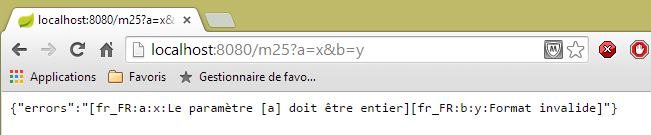 |
On voit que :
- le message d'erreur utilisé pour le paramètre [a] est le suivant :
typeMismatch.actionModel01.a=Le paramètre [a] doit être entier
- le message d'erreur utilisé pour le paramètre [b] est le suivant :
typeMismatch=Format invalide
Pourquoi deux messages différents ? Pour le paramètre [a], il y avait deux messages possibles :
typeMismatch=Format invalide
typeMismatch.actionModel01.a=Le paramètre [a] doit être entier
Les codes d'erreur ont été explorés dans l'ordre du tableau [error.getCodes()]. Il se trouve que cet ordre va du code le plus précis au code le plus général. C'est pourquoi le code [typeMismatch.model01.a] a été trouvé le premier.
4.20. [/m25] : internationalisation d'une application Spring MVC
Maintenant que nous savons personnaliser les messages d'erreur en français, nous voudrions les avoir également en anglais, ce qui nous amène à l'internationalisation d'une application Spring MVC. Pour gérer celle-ci, nous allons étoffer la classe de configuration [Config] qui devient la suivante :
package istia.st.springmvc.main;
import java.util.Locale;
import org.springframework.boot.autoconfigure.EnableAutoConfiguration;
import org.springframework.context.MessageSource;
import org.springframework.context.annotation.Bean;
import org.springframework.context.annotation.ComponentScan;
import org.springframework.context.annotation.Configuration;
import org.springframework.context.support.ResourceBundleMessageSource;
import org.springframework.web.servlet.config.annotation.InterceptorRegistry;
import org.springframework.web.servlet.config.annotation.WebMvcConfigurerAdapter;
import org.springframework.web.servlet.i18n.CookieLocaleResolver;
import org.springframework.web.servlet.i18n.LocaleChangeInterceptor;
@Configuration
@ComponentScan({ "istia.st.springmvc.controllers", "istia.st.springmvc.models" })
@EnableAutoConfiguration
public class Config extends WebMvcConfigurerAdapter {
@Bean
public MessageSource messageSource() {
ResourceBundleMessageSource messageSource = new ResourceBundleMessageSource();
messageSource.setBasename("i18n/messages");
return messageSource;
}
@Bean
public LocaleChangeInterceptor localeChangeInterceptor() {
LocaleChangeInterceptor localeChangeInterceptor = new LocaleChangeInterceptor();
localeChangeInterceptor.setParamName("lang");
return localeChangeInterceptor;
}
@Override
public void addInterceptors(InterceptorRegistry registry) {
registry.addInterceptor(localeChangeInterceptor());
}
@Bean
public CookieLocaleResolver localeResolver() {
CookieLocaleResolver localeResolver = new CookieLocaleResolver();
localeResolver.setCookieName("lang");
localeResolver.setDefaultLocale(new Locale("fr"));
return localeResolver;
}
}
- lignes 28-32 : on crée un intercepteur de requête. Un intercepteur de requête étend l'interface [HandlerInterceptor]. Une telle classe inspecte la requête entrante avant qu'elle ne soit traitée par une action. Ici l'intercepteur [localeChangeInterceptor] va rechercher un paramètre nommé [lang] dans la requête entrante, GET ou POST et va changer la locale de l'application en fonction de ce paramètre. Ainsi si le paramètre est [lang=en_US], la locale de l'application deviendra l'anglais des USA ;
- lignes 34-37 : on redéfinit la méthode [WebMvcConfigurerAdapter.addInterceptors] pour ajouter l'intercepteur précédent ;
- lignes 39-45 : servent à paramétrer la façon dont la locale va être encapsulée dans un cookie. On sait qu'un cookie peut servir de mémoire de l'utilisateur, puisque le navigateur client le renvoie systématiquement au serveur. L'intercepteur [localeChangeInterceptor] précédent crée un cookie encapsulant la locale. La ligne 42 donne le nom [lang] à ce cookie. Le cookie est également utilisé pour changer la locale ;
- ligne 43 : indique qu'en l'absence du cookie [lang], la locale sera [fr] ;
En résumé, la locale d'une requête peut être fixée de deux façons :
- en passant un paramètre nommé [lang] ;
- en envoyant un cookie nommé [lang]. Ce cookie est automatiquement créé à l'issue de la méthode précédente ;
Pour exploiter cette locale, nous allons créer des fichiers de messages pour les locales [fr] et [en] :
 |
Le fichier [messages_fr.properties] est le suivant :
NotNull=Le champ ne peut être vide
typeMismatch=Format invalide
typeMismatch.actionModel01.a=Le paramètre [a] doit être entier
Le fichier [messages_en.properties] est le suivant :
NotNull=The field can't be empty
typeMismatch=Invalid format
typeMismatch.actionModel01.a=Parameter [a] must be an integer
Le fichier [messages.properties] est une recopie du fichier [messages_en.properties]. On rappelle que le fichier [messages.properties] est utilisé lorsqu'aucun fichier correspondant à la locale de la requête n'est trouvé. Dans notre cas, si l'utilisateur envoie un paramètre [lang=en], comme le fichier [messages_en.properties] n'existe pas, c'est le fichier [messages.properties] qui sera utilisé. L'utilisateur aura donc des messages en anglais.
Essayons. Tout d'abord, dans l'environnement de déceloppement de Chrome (Ctrl-Maj-I), vérifiez vos cookies :
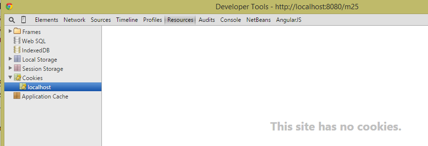 |
Si vous avez un cookie nommé [lang], supprimez-le. Puis avec Chrome, demandez l'URL [http://localhost:8080/m25] :
 |
Le navigateur a envoyé les entêtes HTTP suivants :
On voie que dans ces entêtes, il n'y a pas de cookie [lang]. Notre code dans ce cas, utilise la locale [fr]. C'est ce que montre la copie d'écran. Essayons un autre cas :
 |
- en [1], on a passé le paramètre [lang=en] pour passer la locale à [en] ;
- en [2], on voit la nouvelle locale ;
- en [3], le message est passé en anglais ;
Regardons maintenant les échanges HTTP :
 |
On voit ci-dessus que le serveur a renvoyé un cookie [lang]. Cela a une conséquence importante : la locale de la prochaine requête sera [en] de nouveau à cause du cookie [lang] qui va être renvoyé par le navigateur. On devrait donc garder les messages en anglais. Vérifions-le :
 |
Ci-dessus, on voit que la locale est restée à [en]. A cause du cookie qu'envoie systématiquement le navigateur, elle le restera tant que l'utilisateur ne la changera pas en envoyant le paramètre [lang] comme suit :
 |
4.21. [/m26] : injection de la locale dans le modèle de l'action
Dans l'exemple précédent, nous avons vu une façon de récupérer la locale de la requête :
@RequestMapping(value = "/m25", method = RequestMethod.GET)
public Map<String, Object> m25(@Valid ActionModel01 data, BindingResult result, HttpServletRequest request)
throws Exception {
...
// locale
Locale locale = RequestContextUtils.getLocale(request);
// des erreurs ?
La locale peut être directement injectée dans les paramètres de l'action. Voici un exemple :
@RequestMapping(value = "/m26", method = RequestMethod.GET)
public String m26(Locale locale) {
return String.format("locale=%s", locale.toString());
}
 |  |
 |
On voit ci-dessus qu'il n'y a pas de vérification de la validité de la locale demandée. Mais néanmoins, la requête suivante du navigateur provoque une exception côté serveur car le cookie de locale qu'il reçoit est incorrect.
4.22. [/m27] : vérifier la validité d'un modèle avec Hibernate Validator
Considérons la nouvelle action suivante :
//validation d'un modèle avec Hibernate Validator ------------------------
@RequestMapping(value = "/m27", method = RequestMethod.POST)
public Map<String, Object> m27(@Valid ActionModel02 data, BindingResult result) {
Map<String, Object> map = new HashMap<String, Object>();
// des erreurs ?
if (result.hasErrors()) {
// parcours de la liste des erreurs
for (FieldError error : result.getFieldErrors()) {
map.put(error.getField(),
String.format("[message=%s, codes=%s]", error.getDefaultMessage(), String.join("|", error.getCodes())));
}
} else {
// pas d'erreurs
map.put("data", data);
}
return map;
}
On a là du code vu maintenant plusieurs fois :
- ligne 3 : l'action [/m27] est demandée via un POST ;
- lignes 8-11, chaque erreur sera caractérisée par [champ, message] avec :
- champ : le champ erroné,
- message : le message d'erreur associé ainsi que la liste des codes d'erreur ;
- ligne 14 : s'il n'y a pas d'erreurs, on rend la chaîne jSON des valeurs postées ;
Ligne 3, on utilise le modèle d'action [ActionModel02] suivant :
 |
package istia.st.springmvc.models;
import java.util.Date;
import javax.validation.constraints.AssertFalse;
import javax.validation.constraints.AssertTrue;
import javax.validation.constraints.Future;
import javax.validation.constraints.Max;
import javax.validation.constraints.Min;
import javax.validation.constraints.NotNull;
import javax.validation.constraints.Past;
import javax.validation.constraints.Pattern;
import javax.validation.constraints.Size;
import org.hibernate.validator.constraints.Email;
import org.hibernate.validator.constraints.Length;
import org.hibernate.validator.constraints.NotBlank;
import org.hibernate.validator.constraints.Range;
import org.hibernate.validator.constraints.URL;
public class ActionModel02 {
@NotNull(message = "La donnée est obligatoire")
@AssertFalse(message = "Seule la valeur [false] est acceptée")
private Boolean assertFalse;
@NotNull(message = "La donnée est obligatoire")
@AssertTrue(message = "Seule la valeur [true] est acceptée")
private Boolean assertTrue;
@NotNull(message = "La donnée est obligatoire")
@Future(message = "Il faut une date postérieure à aujourd'hui")
private Date dateInFuture;
@NotNull(message = "La donnée est obligatoire")
@Past(message = "Il faut une date antérieure à aujourd'hui")
private Date dateInPast;
@NotNull(message = "La donnée est obligatoire")
@Max(value = 100, message = "Maximum 100")
private Integer intMax100;
@NotNull(message = "La donnée est obligatoire")
@Min(value = 10, message = "Minimum 10")
private Integer intMin10;
@NotNull(message = "La donnée est obligatoire")
@NotBlank(message = "La chaîne doit être non blanche")
private String strNotBlank;
@NotNull(message = "La donnée est obligatoire")
@Size(min = 4, max = 6, message = "La chaîne doit avoir entre 4 et 6 caractères")
private String strBetween4and6;
@NotNull(message = "La donnée est obligatoire")
@Pattern(regexp = "^\\d{2}:\\d{2}:\\d{2}$", message = "Le format doit être hh:mm:ss")
private String hhmmss;
@NotNull(message = "La donnée est obligatoire")
@Email(message = "Adresse invalide")
private String email;
@NotNull(message = "La donnée est obligatoire")
@Length(max = 4, min = 4, message = "La chaîne doit avoir 4 caractères exactement")
private String str4;
@Range(min = 10, max = 14, message = "La valeur doit être dans l'intervalle [10,14]")
@NotNull(message = "La donnée est obligatoire")
private Integer int1014;
@URL(message = "URL invalide")
private String url;
// getters et setters
...
}
La classe utilise des contraintes de validation issues de deux packages :
- [javax.validation.constraints] aux lignes 5-13 ;
- [org.hibernate.validator.constraints] aux lignes 15-19 ;
Les dépendances Maven de ces deux packages sont présentes dans le projet :
 |
Ici, nous n'allons pas utiliser de messages internationalisés mais des messages définis à l'intérieur de la contrainte avec l'attribut [message]. Pour tester cette action, nous allons utiliser [Advanced Rest Client] :
 |
- en [1-2], la requête POST ;
- en [3], l'entête HTTP [Content-Type] à utiliser ;
- en [4], le lien [Add new value] permet d'ajouter un couple [paramètre, value] ;
- en [5], mettre un champ de [ActionModel02], ici le champ [assertFalse] :
@NotNull(message = "La donnée est obligatoire")
@AssertFalse(message = "Seule la valeur [false] est acceptée")
private Boolean assertFalse;
- en [6], mettre une valeur erronée pour voir un message d'erreur. Ci-dessus, la contrainte [@AssertFalse] exige que le champ [assertFalse] ait la valeur [false] ;
 |
- en [7], la réponse du serveur : la contrainte [@NotNull] des champs vides a été déclenchée et le message d'erreur associé, rendu ;
- en [8], le message du champ [assertFalse] pour lequel la contrainte [@AssertFalse] n'était pas vérifiée ainsi que les codes de cette erreur. On rappelle que ces codes peuvent être associés à des messages internationalisés ;
Voici un autre exemple :
 |

Le lecteur est invité à tester les différents cas d'erreur jusqu'au POST de données toutes valides :
 | 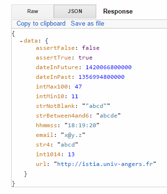 |
Note : le format des dates est le format anglo-saxon : mm/jj/aaaa.
4.23. [/m28] : externalisation des messages d'erreur
Dans la classe [ActionModel02], nous avons mis les messages en 'dur'. Il est préférable de les externaliser dans des fichiers de messages. Nous suivons l'exemple de l'action [/m25]. Nous créons le nouveau modèle d'action [ActionModel03] suivant :
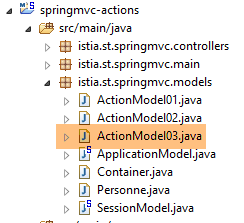 |
package istia.st.springmvc.models;
import java.util.Date;
import javax.validation.constraints.AssertFalse;
import javax.validation.constraints.AssertTrue;
import javax.validation.constraints.Future;
import javax.validation.constraints.Max;
import javax.validation.constraints.Min;
import javax.validation.constraints.NotNull;
import javax.validation.constraints.Past;
import javax.validation.constraints.Pattern;
import javax.validation.constraints.Size;
import org.hibernate.validator.constraints.Email;
import org.hibernate.validator.constraints.Length;
import org.hibernate.validator.constraints.NotBlank;
import org.hibernate.validator.constraints.Range;
import org.hibernate.validator.constraints.URL;
public class ActionModel03 {
@NotNull
@AssertFalse
private Boolean assertFalse;
@NotNull
@AssertTrue
private Boolean assertTrue;
@NotNull
@Future
private Date dateInFuture;
@NotNull
@Past
private Date dateInPast;
@NotNull
@Max(value = 100)
private Integer intMax100;
@NotNull
@Min(value = 10)
private Integer intMin10;
@NotNull
@NotBlank
private String strNotBlank;
@NotNull
@Size(min = 4, max = 6)
private String strBetween4and6;
@NotNull
@Pattern(regexp = "^\\d{2}:\\d{2}:\\d{2}$")
private String hhmmss;
@NotNull
@Email
private String email;
@NotNull
@Length(max = 4, min = 4)
private String str4;
@Range(min = 10, max = 14)
@NotNull
private Integer int1014;
@URL
private String url;
// getters et setters
...
}
Les messages d'erreur sont externalisés dans les fichiers [messages.properties] :
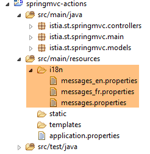 |
Le fichier [messages_fr.properties] est le suivant :
NotNull=Le champ ne peut être vide
typeMismatch=Format invalide
typeMismatch.actionModel01.a=Le paramètre [a] doit être entier
Range.actionModel03.int1014=La valeur doit être dans l'intervalle [10,14]
NotBlank.actionModel03.strNotBlank=La chaîne doit être non blanche
AssertFalse.actionModel03.assertFalse=Seule la valeur [false] est acceptée
Pattern.actionModel03.hhmmss=Le format doit être hh:mm:ss
Past.actionModel03.dateInPast=Il faut une date antérieure ou égale à celle d'aujourd'hui
Future.actionModel03.dateInFuture=Il faut une date postérieure à celle d'aujourd'hui
Length.actionModel03.str4=La chaîne doit avoir 4 caractères exactement
Min.actionModel03.intMin10=Minimum 10
Max.actionModel03.intMax100=Maximum 100
AssertTrue.actionModel03.assertTrue=Seule la valeur [true] est acceptée
Email.actionModel03.email=Adresse invalide
Size.actionModel03.strBetween4and6=La chaîne doit avoir entre 4 et 6 caractères
URL.actionModel03.url=URL invalide
Les messages d'erreur ont été ajoutés aux lignes 4-16. Ils sont sous la forme :
Les codes ne peuvent être quelconques. Ce sont ceux affichés dans l'action [/m27] précédente. Par exemple :
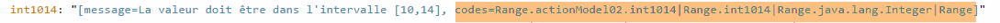
Dans les fichiers de messages, il faut pour le champ [int1014] utiliser l'un des quatre codes ci-dessus.
Le fichier [messages_en.properties] est le suivant :
NotNull=The field can't be empty
typeMismatch=Invalid format
typeMismatch.actionModel01.a=Parameter [a] must be an integer
Range.actionModel03.int1014=Value must be in [10,14] interval
NotBlank.actionModel03.strNotBlank=String can't be empty
AssertFalse.actionModel03.assertFalse=Only boolean [false] is allowed
Pattern.actionModel03.hhmmss=String format is hh:mm:ss
Past.actionModel03.dateInPast=Date must be before or equal to today's date
Future.actionModel03.dateInFuture=Date must be after today's date
Length.actionModel03.str4=String must be four characters long
Min.actionModel03.intMin10=Minimum 10
Max.actionModel03.intMax100=Maximum 100
AssertTrue.actionModel03.assertTrue=Only boolean [true] is allowed
Email.actionModel03.email=Invalid email
Size.actionModel03.strBetween4and6=String must be between four and six characters long
URL.actionModel03.url=Invalid URL
Le modèle d'action [ActionModel03] est exploité par l'action suivante :
// ----------------------- externalisation des messages d'erreur ------------------------
@RequestMapping(value = "/m28", method = RequestMethod.POST)
public Map<String, Object> m28(@Valid ActionModel03 data, BindingResult result, HttpServletRequest request) {
Map<String, Object> map = new HashMap<String, Object>();
// le contexte de l'application Spring
WebApplicationContext ctx = WebApplicationContextUtils.getWebApplicationContext(request.getServletContext());
// locale
Locale locale = RequestContextUtils.getLocale(request);
// des erreurs ?
if (result.hasErrors()) {
for (FieldError error : result.getFieldErrors()) {
// recherche du msg d'erreur à parir des codes d'erreur
// le msg est cherché dans les fichiers de messages
// les codes d'erreur sous forme de tableau
String[] codes = error.getCodes();
// sous forme de chaîne
String listCodes = String.join(" - ", codes);
// recherche
String msg = null;
int i = 0;
while (msg == null && i < codes.length) {
try {
msg = ctx.getMessage(codes[i], null, locale);
} catch (Exception e) {
}
i++;
}
// a-t-on trouvé ?
if (msg == null) {
msg = String.format("Indiquez un message pour l'un des codes [%s]", listCodes);
}
// on a trouvé - on ajoute l'erreur au dictionnaire
map.put(error.getField(), msg);
}
} else {
// pas d'erreurs
map.put("data", data);
}
return map;
}
On a déjà commenté ce type de code. La seule chose réellement importante est la ligne 23 : le message d'erreur récupéré dépend de la locale de la requête.
Voici un exemple en français :
 |  |
et maintenant en anglais :
 |  |